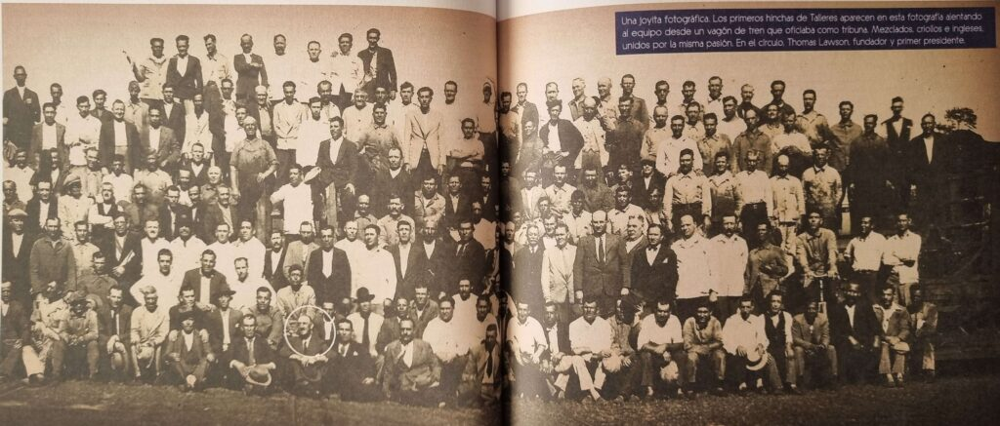
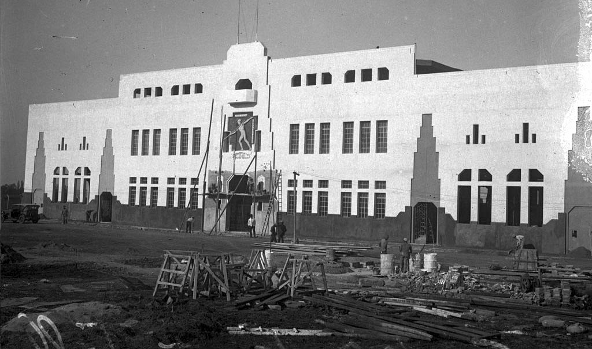
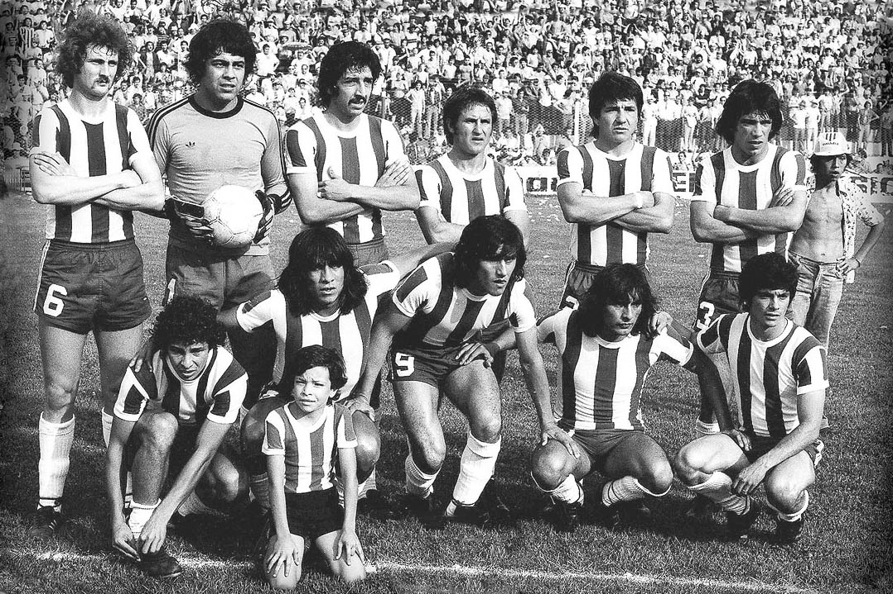
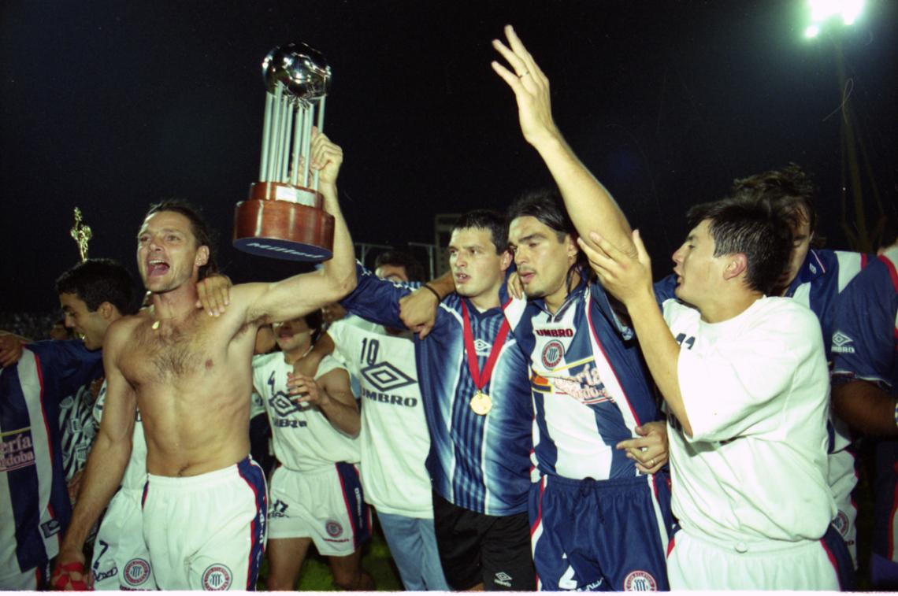
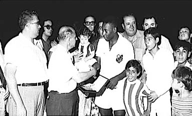

---
Competencia Principal
-
Seleccione una temporada del menú lateral para ver el plantel completo.
Plantel Completo
0 JugadoresSin datos detallados
La información del plantel para este año se encuentra en proceso de digitalización y verificación histórica.
MEMORIA ALBIAZUL
Un recorrido por las imágenes que forjaron la identidad del Club más grande del interior.

EL ORIGEN
Thomas Lawson y los fundadores del Central Córdoba que daría lugar a la mística de Talleres.

LA BOUTIQUE
La construcción del templo de Barrio Jardín, joya arquitectónica del fútbol argentino.

O REI EN CBA
Pelé con la camiseta del Santos visitando a Talleres ante un Barrio Jardín colmado.

EQUIPO DE ORO
El equipo que deslumbró al país bajo la batuta del Maestro Valencia y la Wanora Romero.

COPA CONMEBOL
Talleres conquistó América la noche del 8 de diciembre de 1999, la máxima hazaña del fútbol cordobés.

EL SAPUCAI
El gol agónico del Cholo Guiñazú en el último segundo para volver definitivamente a Primera.